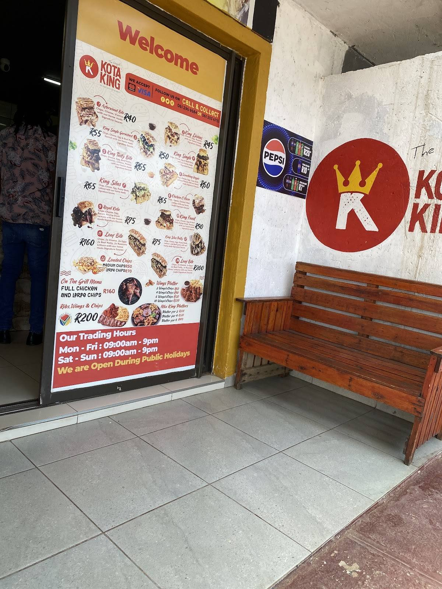

Mission
To prepare and serve fresh, high-quality and affordable township fast food that satisfies local customers and celebrates local food culture.

Our story
Kota King is a local fast-food business in Protea Glen Ext 13, Soweto. The business focuses on filling township-style meals such as kotas, Dagwoods, loaded chips, wings, ribs and combo meals.
The website makes it easier for customers to learn about the business, view food options, find contact information and see food photographs in one place.
To prepare and serve fresh, high-quality and affordable township fast food that satisfies local customers and celebrates local food culture.
To grow a trusted local food brand that is recognised by customers in Soweto and surrounding communities.